Bem vindo novamente a Raccon City. Em Resident Evil 2 você volta à cidade que foi dominada pelo perigoso vírus descoberto no primeiro jogo da série. Os feróis Chris e Jill estão desaparecidos, e dois novos personagens serão seus companheiros: Leon Kennedy, um policial, e Clarie Redfield, irmã mais nova de Chris. Eles se unem com o objetivo de parar Umbrella (a empresa responsavél pelapeste que trnsformou as pessoas da cidade em zumbis) e resgatar os sobreviventes do ataque. Esse objetivo não é nada facil. Para ajudar mapas completos de todos os cenários e dicas para ganhar o jogo.
| 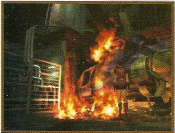 | 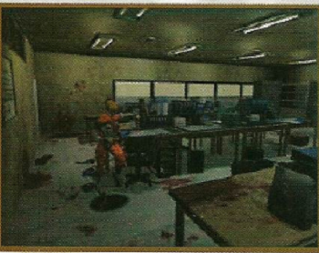 |
| 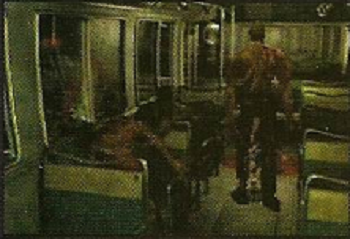 | 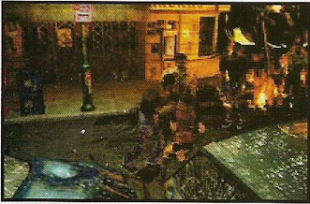 |
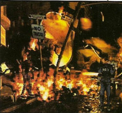
==> Quando você estiver em perigo, a melhor coisa a fazer é não vancar o herói: saia correndo. Se você estiver cercado por zumbis, tente acertá-los com qualquer coisa, e fuja o mais rápido possivel.
==> A coisa mais importante para saber a respeito de um zumbi é que, para derrubá-lo, é presciso disparar quato tiros seguidos. Dê mais dosi tiros assim que o zumbi se levantar para conseguir ,atá-lo. se essa seguência de disparo não for respeitada pode ser que voce tenha que dar mais nove tiros na criatura.
==> Zumbis são lentos e não atacam à distância. Se encontrar uma sala cheia deles, atire sem dó. Como eles são frágeis, as balas poderão atingir mais de dois zumbis de uma única vez.
==> Se estiver sem força mas com pouco armamento ao encontrar um ou dois zumbis, prefira o combate corpo a corpo, Quando os zumbis caírem no chão, dê um pisão na cabeça deles para matá-los.
==> Os cachorros zimbis são mais rápidos do que os humanoides. Mate-os à distância, disparando quatro tiros seguidos
==> As criaturas sem pele já estão meio mortas, por isso só devem ser atacadas quando estiver com a energia completa. Não adianta ficar atirando, o melhor é empurrá-los para o chão e pisar na cabeça deles.
Para destruir as plantas, basta dar alguns tiros na base, mas tome muito cuidado com o veneno.
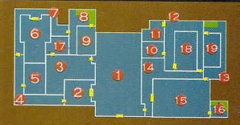
==> Leon/Claire - Primeira fase - Quartel General da Policia - Primeiro Andar
Sala 1 = Munição(x2), Mata borrão, Chave Space
Sala 2 = Memorando, Primeiros Socorros
Sala 3 = Chave cartão, Erva, Munição, Memorando para Leon, Chave heart(Leon), Detonador(Clarie)
Sala 4 = Munição, Erva
Sala 5 = Relatório de patrulha, Mata borrão, Manivela
Sala 6 = Relatório de operação, Diamante vermelho, Munição
Sala 8 = Erva
Sala 9 = Mata borrão, Relarório de operações 2
Sala 10 = Munição, Pequena chave
Sala 11 = Cabo, Primeiro socorros, Rook plug(Leon), Pedra eagle(Clarie)
Sala 12 = Erva vermelha
Sala 13 = Erva
Sala 14 = Erva
Sala 15 = Mata borrão, Erva, Armamento(Leon), Bomba plástica(Clarie), Munição
Sala 17 = Filme, Armamento(Leon), Bomba plástica(Clarie)
Sala 18 = Roda dentada, Filme B
Sala 19 = Armamento(Leon), Magnum(Leon), Diáeio, Àcido(Clarie)
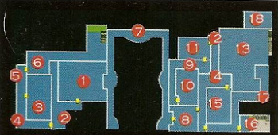
==> Quartel General da Policia - Segundo Andar
Sala 1 = Plugue(Leon), Pedra(Claire), Erva vermelha
Sala 2 = Munição(leon), Partes de armas(Leon)
Sala 3 = S.T.A.R.S., Spray de primeiros socorros, Lançador de granadas(Claire), Diário do Chris, Munição, Medalha(Unicom), Fax para Chris
Sala 6 = Diamante vermelho
Sala 8 = Chave(Leon), Isqueiro(Claire), Diário da secretária A, Mata borrão
Sala 10 = Diário da secretária B(Claire), Spray de primeiros socorros(Claire)
Sala 11 = Chave Heart(Claire)
Sala 13 = Munição
sala 15 = Chave Diamond, Arma, Plugue(Leon), Pedra(Claire)
Sala 16 = Erva(x3)
Sala 17 = Munição
Sala 18 = Mata Borrão, Controlador da válvula, Munição, Parte de arma
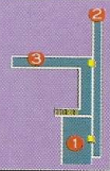
==> Quartel General da Policia Terceiro andar
Sala 1 = Plugue(Leon), Pedra(Claire)
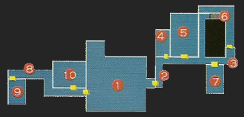
==> Quartel General da Policia - Portão
Sala 1 = Erva
Sala 4 = Requer o Cartão Vermelho, Munição(Claire), Partes de Armas(Claire)
Sala 5 = Erva
Sala 6 = Erva vermelha(Claire)
Sala 7 = Sala de autópsia, Cartão vermelho(Claire)
Sala 8 = Munição(Leon)
Sala 9 = Sala do prisioneiro, Abridor do poço(Leon), Erva(x2)
Sala 10 = Erva vermelha(Leon)
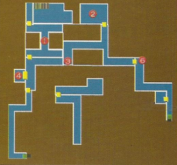
==> parte do esgoto
Sala 1 = Mata borrão(Claire)
Sala 2 = Mapa do esgoto, Chave club
Sala 3 = Granada(Sherry/Claire)
Sala 4 = Erva azul(Leon)
Sala 6 = Cartucho para pistola(Ada/Leon)
==> Esgoto área B-1
A direita antes da área B-1: Ácidos(Claire)
Dentro da área B-1: Munição, Spray de primeiros socorros, Fax para Administrador do esgoto, Mata borrão(Leon), Ácido(Clarie), Medalha(gold), Diário do administrador do esgoto
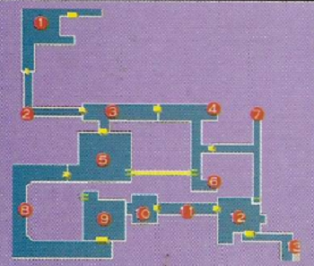
==> Esgoto área B-2
Sala 1 = Granadas (Claire)
Sala 5 = Mapa do esgoto área B-2
Sala 6 = Flame(Claire), Wolf Medal(Leon)
Sala 8 = Erva azul, Erva(x2), Flame(Clarie)
Sala 10 = Medalha(Silver Wolf)
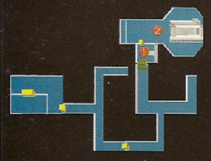
==> Fábrica
Sala 1 = Área de Armazenamento, Mata Borrão, Spray de primeiros socorros, Cartucho para pistola(Leon), Flame(Clarie)
Sala 2 = Elevador mapa da fabrica, Munição, Chave do painel de controle, Flame(Claire)
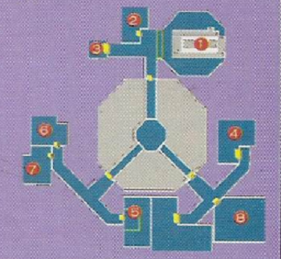
==> Laboratório - Área B-4
Sala 2 = Erva, Cartucho para pistola(Leon), Ácidos(Clarie), Mata Borrão, Balas para magnum(Leon)
Sala 4 = Sala congelada - Suporte para fusível, Fusível, Spray de primeiros socorros
Sala 5 = Planta gigante - Erva(x2)
Sala 6 = Erva Azul, Manual de segurança, Registro de usuário, Lança chamas(Leon), Partes de armas(Claire)
Sala 7 = Mata borrão, Cartucho para pistola(x2)(Leon), Granadas(x2)(Claire)
Sala 8 = Requer chave do laboratório, G-Virus(Leon), Spray de primeiro socorros(Leon), Vacina(Claire)
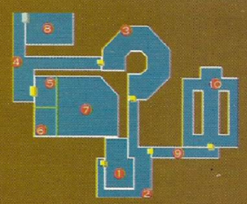
==> Laboratório área B-4
Sala 2 = Erva(x3)
Sala 3 = Mapa do laboratório
Sala 4 = Erva vermelha, Instruções do soro(Claire)
Sala 5 = Partes da magnum(Leon), Granadas(x2)(Claire), Spray de primeiros socorros
Sala 7 = Cartão para abrir o laboratório
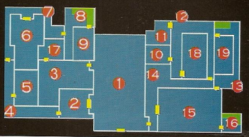
==> Segundo cenário - Quartel general da policia - Primeiro andar
Sala 1 = Arma, Mata borrão, Chave(Spade)
Sala 2 = Memorando de policia, Spray de primeiros socorros
Sala 3 = Erva, Munição, Memorando para Leon, Chave heart(Leon), Detonador(Claire)
Sala 4 = Corredor - Munição, Erva
Sala 5 = Arquivo - Relatório de patrulha, Mata borrão, Spray de primeiros socorros(Leon), Isqueiro(Clarie)
Sala 6 = Sala de instruções - Relatório de operações #1, Diamante vermelho, Munição
Sala 8 = Escadaria - Erva
Sala 9 = Mata borrão, Relatório de operações #2
Sala 10 = Munição
Sala 11 = Spray de primeiros socorros, Plugue(Leon), Pedra(Claire)
Sala 12 = Erva vermelha
Sala 13 = Erva, Cartucho para pistola(Leon)
Sala 14 = Erva
Sala 15 = Mata borrão, Munição(x2), Controlador da válvula, Cartucho para pistola(Leon), Mapa do quartel general
Sala 17 = Filme, Cartucho para pistola(Leon), Parte de armas(Claire), Bimba plática
Sala 18 = Engrenagem
Sala 19 = Cartucho para pistola(Leon), Bala para magnum(Leon), Ácidos(Claire)
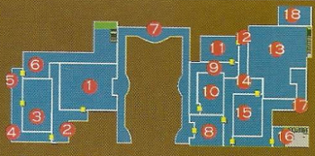
==> Quartel General da policia - Segundo Andar
Sala 1 = Plugue(Leon), Pedra(Claire), Erva vermelha
Sala 2 = Chave(Leon), Parte de arma
Sala 3 = S.T.A.R.S. - Spray de primeiros socorros, Diário do Chris, Chave Diamond(Claire), Arma, Fax para Chris
Sala 6 = Diamante vermelho
Sala 7 = Medalha(Unicom)
Sala 8 = Diário da secretaria A
Sala 10 = Diário da secretaria B, Manivela(Leon), Spray e primeiros socorros(Claire)
Sala 13 = Cartucho para Pistola(Leon), Ácido(Claire)
Sala 15 = Plugue(Leon), Cartão azul, Pedra(Claire)
Sala 16 = Erva(x3)
Sala 17 = Munição, Erva
Sala 18 = Mata borrão, Munição
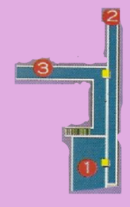
==> Quartel general da policia - Terceiro Andar
Sala 1 - Plugue(Leon), Pedra(Claire)
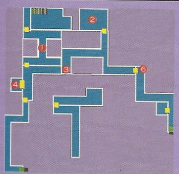
==> Primeira parte do esgoto
Sala 1 - Mata borrão
Sala 2 - Mapa do esgoto A, Chave club
Sala 3 - Granadas(Sherry/Claire)
Sala 4 - Erva azul
Sala 6 - Cartucho para pistola(Ada/Leon)
==> Esgoto área B-1 - À direita antes da área B-1: Munição
Na área B-1: Munição, Spray de primeiro socorros, Fax para o administrador do esgoto, Mata borrão, Ácido(Clarie) Medalhão(eagle), Diário do administrador do esgoto
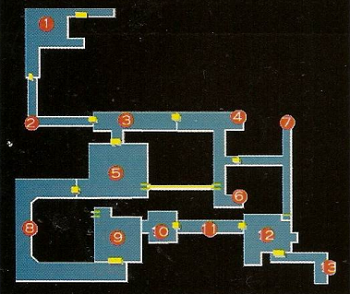
==> Esgoto área B-2
Sala 1 = Granadas(Claire)
Sala 5 = Mapa da área B-2
Sala 6 = Flame(Claire), Medalha(Leon), Pequena chave(Leon)
Sala 8 = Erva azul, Erva(x2)
Sala 10 = Cartucho para pistola, Mata borrão
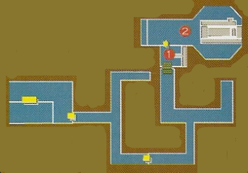
==> Fábrica
Sala 1 = Área de Armazenamento, Mata borrão, Spray de primeira socorros, Cartucho para pistola(Leon), Balas para magnum(Leon), Flame(Claire), Granadas(Claire)
Sala 2 = Elevador Mapa da Fábrica, Munição, Cartucho para Pistola, Flame
Sala 3 = Chave do painel de controle, Laboratório área B-1, Erva
Sala 4 = Chave mestre, Laboratório área B-2, Relatório Epslion
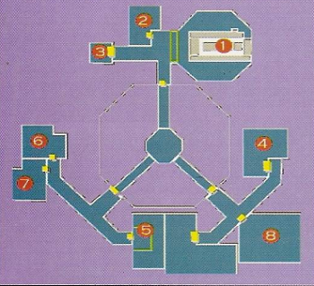
==> Laboratório área B-4
Sala 2 = Sherry(Leon), Erva, Ácidos, Mata borrão
Sala 4 = Sala congelada suporte para fusivél, Fusivel, Spray de primeiro socorros
Sala 5 = planta gigante, Erva(x2)
Sala 6 = Borrifador, Erva azul, Manual de segurança, Registro de usuário, Lança chamas(Leon), Frame(Claire), Cartão vermelho
Sala 7 = Mata Borrão, Cartucho para pistola(x2)(Leon), Granadas(x2)(Clarie)
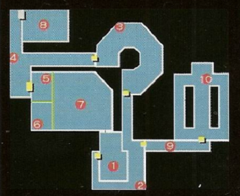
==> Laboratório área B-5
Sala 2 = Erva(x3)
Sala 3 = Mapa do laboratório
Sala 4 = Erva vermelha
Sala 5 = Partes da magnum(Leon), Granadas(x2)(Claire)
Sala 7 = Chave